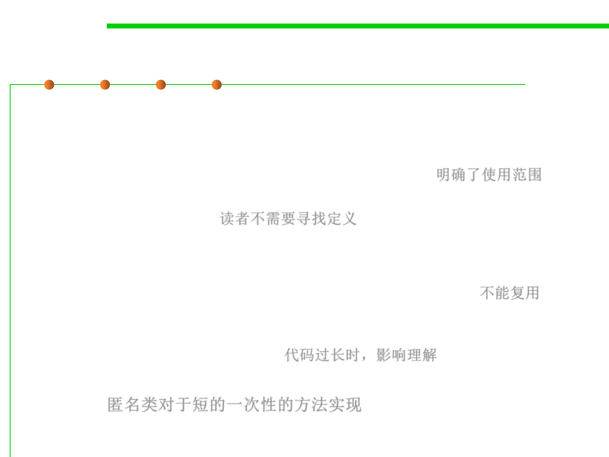

Anonymous classes
10.1 Concurrency and Thread-Safety
▪ Advantages of anonymous class over named class:
– If we’re only using the comparator in this one piece of code, we’ve reduced its
scope by using an anonymous class. With a named class, any other code could
start using and depending on StringLengthComparator. 明确了使用范围
– A reader no longer has to search elsewhere for the details of the comparator,
everything is right here. 读者不需要寻找定义
▪ Disadvantages:
– If we need the same comparator more than once, we might be tempted to
copy-and-paste the anonymous class. The named class is DRY. 不能复用
– If the implementation of the anonymous class is long, it interrupts the
surrounding code, making it harder to understand. The named class is
separated out as a modular piece. 代码过长时，影响理解
▪ So anonymous classes are good for short one-off implementations of a
method. 匿名类对于短的一次性的方法实现